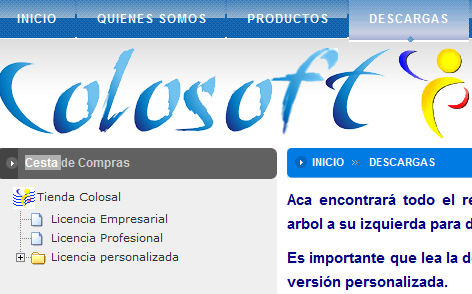
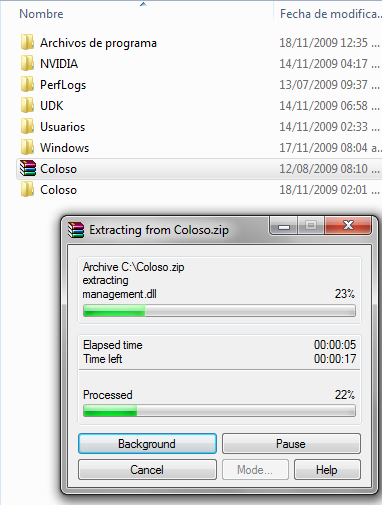
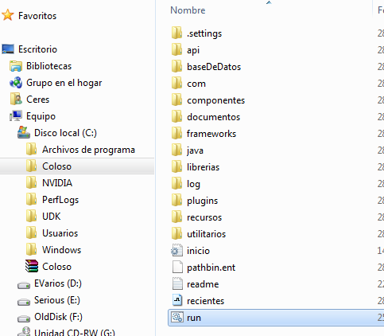

|
Coloso se puede instalar mediante los binarios en formato zip o mediante el instalador proporcionado por Colosoft.
Paquete binario
Para este caso no se necesita ninguna instalación en particular. Es necesario dirigirse a la sección de descargas en http://www.colosoft.com.co/ y licenciar los módulos deseados. La Figura 1 muestra la cesta de compras desde donde se puede accesar la descarga de Coloso

Figura 1. Descargando el componente
Una ves descargado el paquete binario, se presenta un paquete en formato zip que contiene
todos los elementos necesarios para ejecutar Coloso con los componentes
seleccionados. Para ejecutar el programa en sistemas operativos Microsoft® Windows
XP© o anteriores es necesario utilizar un programa como Corel© winzip® o Rarlab© winrar® para descomprimir el contenido del archivo zip.
Una vez descargado el paquete zip que contiene Coloso, éste se ubica éste en
una carpeta de su predilección (para el ejemplo se utilizará c:\) y se extraen los archivos
utilizando cualquiera de los programas anteriormente mencionados, como se muestra en la Figura 2.

Figura 2 Extracción de Coloso
Para ejecutar el programa se ubica el archivo run.bat dentro de la carpeta donde se extrajeron los archivos, tal como se muestra en la Figura 3.
 Figura 3. Ejecutando Coloso
La carpeta donde se extrajo Coloso pueda ser movida libremente de sitio
dentro del sistema de archivos sin afectar la ejecución del software.
Utilizando el Instalador
|